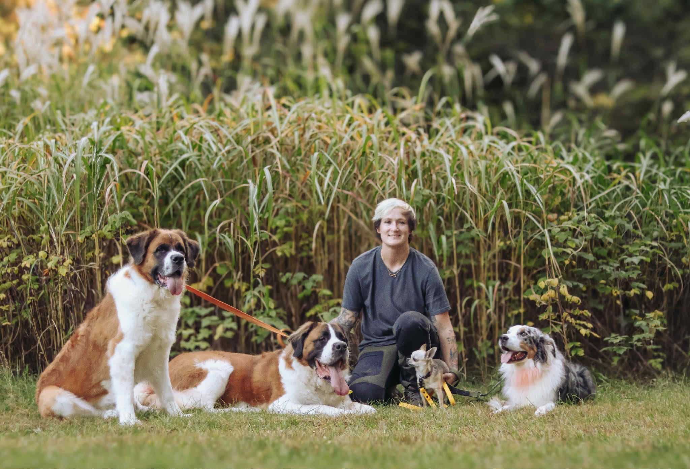

Our Story
Welcome to The Groom Room, Stevens Point's premier luxury dog grooming destination. Our passion for pets and commitment to excellence has made us the trusted choice for discerning pet owners who want only the best for their furry family members.
Our Philosophy
At The Groom Room, we believe that every dog deserves to look and feel their absolute best. We combine professional expertise with genuine love for animals to create a grooming experience that is both luxurious and stress-free for your pet.
What Sets Us Apart
- Premium Products: We use only the finest, pet-safe grooming products specifically tailored for pet comfort. Our bathing products come from IV San Bernard, whose products represent the highest standard in professional canine care. Read more about them: https://isbusa.com/about-us/
- Expert techniques: Our estheticians stay current with the latest grooming trends and techniques, as well as take continuing education courses in canine handling.
- Calm Environment: We create a peaceful, spa-like atmosphere that keeps pets relaxed and happy, including relaxing music and a pheromone diffuser.
Our Commitment
We are dedicated to providing the highest quality grooming services while maintaining the safety and comfort of every pet in our care. Your dog's well-being is our top priority, and we treat every pet as if they were our own.
Located in the heart of Stevens Point, we are proud to serve our local community and build lasting relationships with both pets and their owners. We look forward to welcoming you and your furry friend to The Groom Room family.
In the News
- Stevens Point Journal (2020-01-31): Super Bowl ad inspires kind act toward lifesaving plover groomer
What Our Clients Say
Don't just take our word for it - hear from our happy clients!
"Very friendly and great with my mom’s dogs. Was very patient with the dogs and they are always in a great mood"
"Friendly and very knowledgeable, both my dogs are treated very well."
"My dog is not a big fan of baths and has struggled at other grooming places due to all the noise. Now, he always comes home clean and happy. They do such a great job with him!"
"Absolutely recommend!! I have a woolly husky, and a plush husky, so lots of fur due to the double coats. Having a regular grooming schedule has been amazing! They use top quality products and are highly skilled while also continuing their educations. They are kind, caring, and patient. My dogs have no qualms going there (unlike the vet lol) and I always enjoy our conversations. The level of service is unmatched"
"I rescued a very shy golden retriever and The Dog Groomers are SO patient with her. They work at her speed and now even let her crazy younger brother stay when she gets groomed! I'm so thankful they took a chance on Lemon and she always comes back looking better than ever! They provide the best groom at affordable prices!"
"They do a great job with our giant boys and are very accommodating to their needs and comfort levels. Highly recommend!"
"Our older, blind lab really dislikes having her nails trimmed. Mariah was patient, calming and accommodating. I also appreciate their level of customer service. They were very responsive to messages and really went above and beyond to fit us in quickly. Kai thanks you and so do we!"
"Mariah does so well with our little (big) girl. We are so pleased with our experiences and our dog is so pretty and well taken care of. HIGHLY recommend Mariah!"
"A very knowledgeable groomer who truly loves dogs"
"My malamute has as much attitude as she does fur. She's melodramatic, vocally opposed to all things grooming-related and especially hates having her nails clipped. Mariah is great with her, and she also understands the needs of a double-coated dog. Mariah also alerted me to a cracked tooth after one appointment, so I was able to get that addressed before a larger issue arose."
"Mariah saved our dog's life!! Mariah showed me a lump on Macy's paw which was hard to see with all of Macy's hair and it turned out to be cancer!! If Mariah had not alerted me to this lump - I probably would not have noticed it! Macy was not licking it or limping-so I did not know she had a lump on her paw area!! Macy had surgery and went thru Chemotherapy and is now cancer free now yahoo!! Macy is a 5 year old Golden Doodle and we are so blessed to have her in our lives!! Thank you Mariah for saving our Macy!! This story was also featured on the front page of the Stevens Point Journal - fun!! GO MARIAH!! She is a great groomer and very careful to point out any issues to her clients! I highly recommend Mariah!"
"Mariah is the only one that I can go to in order to get my JRT's nails trimmed. She is patient and willing to work with my extremely anxious dog. I highly recommend her!!!"